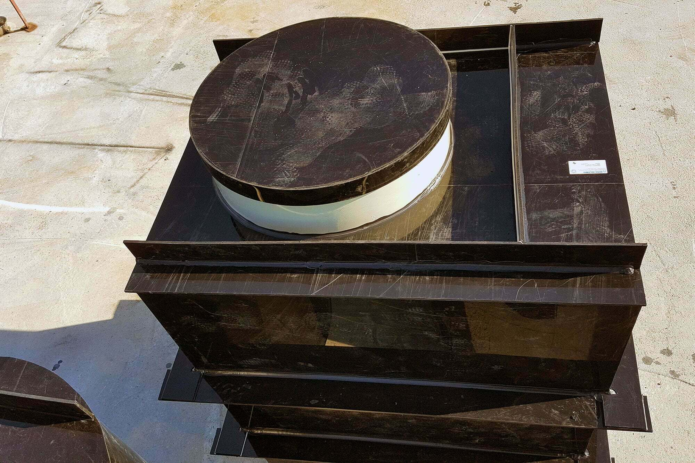
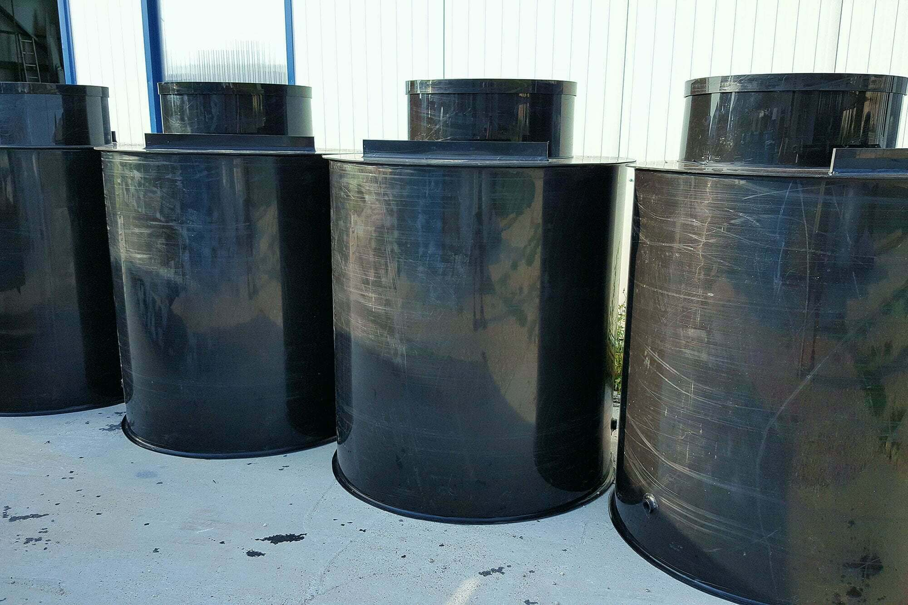
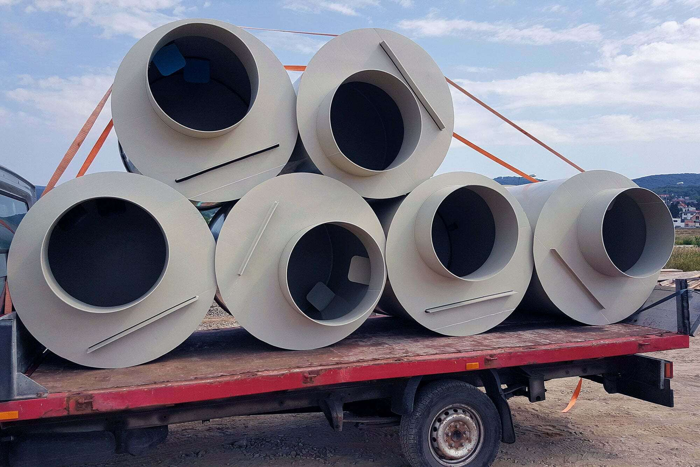
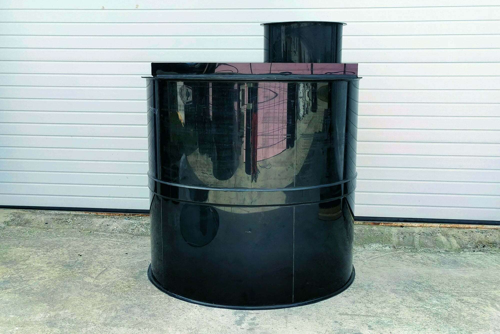
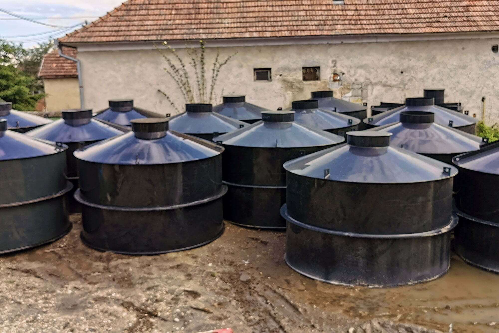
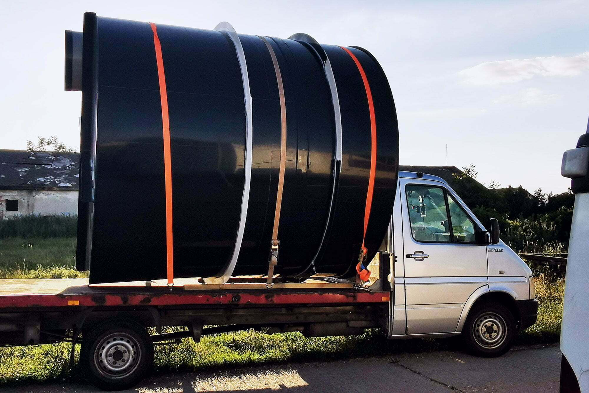
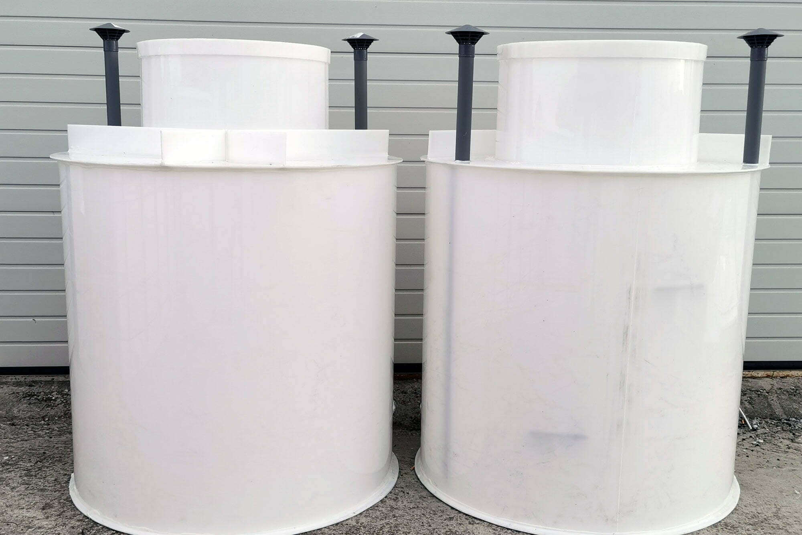
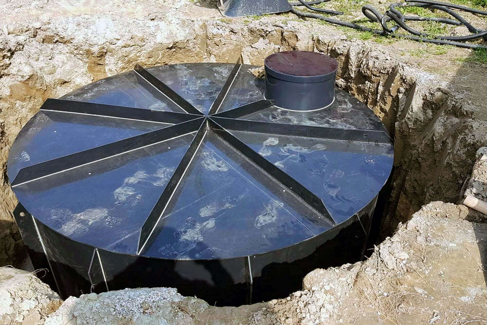
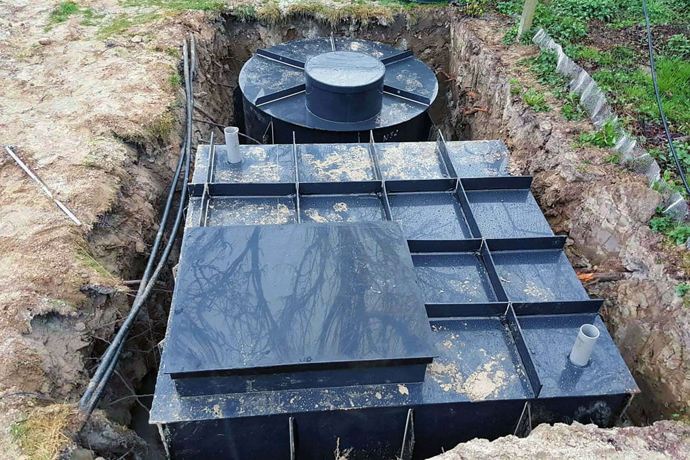
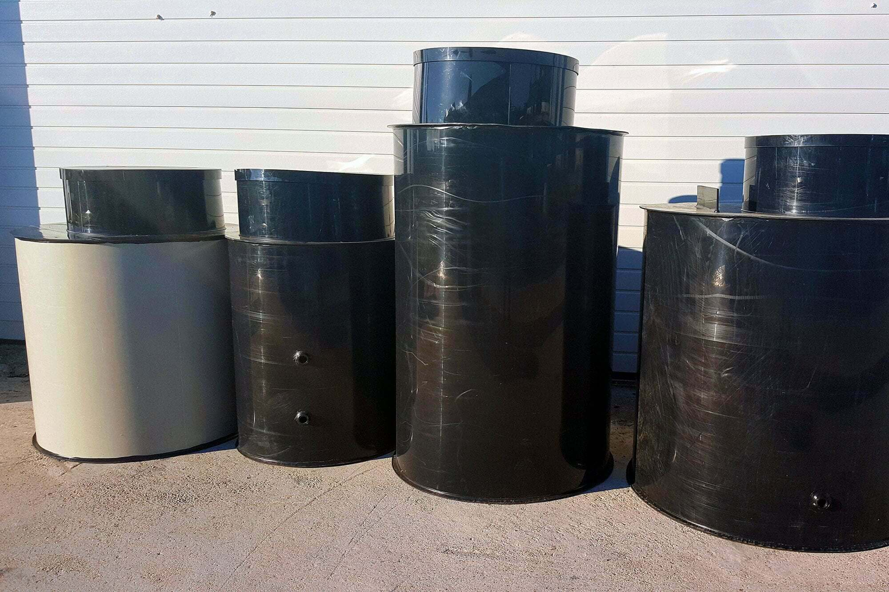

Výroba na mieru
Plastové nádrže a žumpy
Najlepšie riešenie pre akumuláciu dažďovej vody, splaškovej vody a iných kvapalín. Neporézny polypropylén, vysoká pevnosť a výroba presne podľa vašich požiadaviek.
Najlepšie riešenie pre akumuláciu dažďovej vody, splaškovej vody a iných kvapalín. Neporézny polypropylén, vysoká pevnosť a výroba presne podľa vašich požiadaviek.
Vyrábame nádrže prispôsobené pre rôzne geologické a záťažové podmienky vášho pozemku.
Ideálna pre miesta s klasickou zeminou bez výskytu spodnej vody. Vďaka masívnym vnútorným a vonkajším výstuham sa nemusí obetónovať, stačí ju obsypať triedenou zeminou.
Určená do miest so statickým zaťažením (napr. prejazd vozidiel, blízko komunikácie) alebo do väčších hĺbok. Pre zachovanie tvaru sa celá stena pri inštalácii obetónuje.
Vyvinutá špeciálne pre miesta s vysokou hladinou spodnej vody alebo pre záplavové oblasti. Dvojitý plášť sa vyplní betónom, čím vznikne extrémne stabilná konštrukcia.
Zber a využívanie dažďovej vody je v súčasnosti nielen ekologickou, ale najmä ekonomickou nevyhnutnosťou. Naše retenčné nádrže vám umožnia efektívne zachytávať vodu zo striech, ktorú môžete následne použiť na zavlažovanie záhrady, splachovanie toaliet alebo pranie.

Pevné výstuhy
Rebrá zabraňujú deformácii nádrže vonkajším tlakom zeminy a betónu.
Revízny komín
Umožňuje jednoduchý prístup pre kontrolu hladiny a bezproblémové vyťahovanie žumpy.
V miestach bez možnosti pripojenia na verejnú kanalizáciu sú bezodtokové žumpy štandardným a najspoľahlivejším riešením. Vyrábame 100% vodotesné nádoby, ktoré spĺňajú všetky normy.
Aby nádrž vydržala tlak okolitej zeminy, dodávame ju so špeciálnymi vonkajšími výstuhami (rebrami) určenými na obetónovanie. Je vždy potrebné vybetónovať základovú dosku a následne nádrž postupne obetónovať pri súbežnom dopúšťaní vody do jej vnútra.
Dbáme na výber špičkových plastov a precízne zváranie, aby naše nádoby slúžili desaťročia.
Vyrábame nádrže valcové (lepšie odolávajú tlakom zeminy a vody) alebo hranaté (ideálne pre maximálne využitie úzkeho priestoru). Rozmery prispôsobíme vašej jame.
Zdravotne nezávadný, stálofarebný neporézny materiál. Hladký povrch zabraňuje usadzovaniu nečistôt a extrémne uľahčuje prípadné čistenie.
Materiál je odolný voči UV žiareniu, mnohým chemikáliám a vyznačuje sa teplotnou odolnosťou v extrémnom rozmedzí od -40 °C až do +100 °C.
Pozrite si ukážky z inštalácií našich nádrží a žúmp v praxi.










Zavolajte nám alebo nám napíšte vaše požiadavky na objem a rozmery. Pripravíme vám nezáväznú cenovú ponuku.